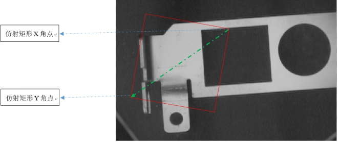

Công cụ tạo hình chữ nhật affine thực hiện thao tác tạo hình chữ nhật affine dựa trên tọa độ điểm trung tâm đầu vào, chiều rộng và chiều cao. Hiệu quả như Hình 1.

| Phân loại | Tên tham số | Mô tả tham số |
|---|---|---|
| Cửa sổ thuộc tính | Có kéo để tạo hay không | Chọn có hay không việc kéo để tạo hình chữ nhật affine. Khi chọn "Có", cửa sổ thuộc tính sẽ xuất hiện thuộc tính "Hình dạng hình chữ nhật affine". |
| Hình dạng hình chữ nhật affine | Tham số để kéo tạo hình chữ nhật affine. | |
| Cửa sổ hình ảnh | Ảnh đầu vào | Hiển thị ảnh cần kiểm tra. |
| Chuỗi dữ liệu | Ảnh đầu vào | Chiều rộng, chiều cao, và kích thước điểm ảnh của ảnh đầu vào, giống như tham số ảnh đầu vào trong cửa sổ hình ảnh. |
| Tọa độ X trung tâm hình chữ nhật affine | Nhập tọa độ X của điểm trung tâm tạo thành hình chữ nhật affine, kiểu double. | |
| Tọa độ Y trung tâm hình chữ nhật affine | Nhập tọa độ Y của điểm trung tâm tạo thành hình chữ nhật affine, kiểu double. | |
| Chiều rộng hình chữ nhật affine | Nhập chiều rộng của hình chữ nhật affine, kiểu double. | |
| Chiều cao hình chữ nhật affine | Nhập chiều cao của hình chữ nhật affine, kiểu double. | |
| Góc xoay của hình chữ nhật affine | Nhập góc xoay để tạo hình chữ nhật affine, kiểu double. | |
| Giao diện nâng cao | Không có | Không có |
| Phân loại | Tên tham số | Mô tả tham số |
|---|---|---|
| Cửa sổ giám sát | Góc X của hình chữ nhật affine | Xuất tọa độ điểm góc theo trục X. |
| Góc Y của hình chữ nhật affine | Xuất tọa độ điểm góc theo trục Y. | |
| Kết quả hình chữ nhật affine | Xuất tọa độ điểm trung tâm, chiều rộng, chiều cao, góc xoay và góc nghiêng (shear) của hình chữ nhật affine được tạo ra. | |
| Kết quả thực thi | Kết quả thực thi của công cụ. | |
| Thời gian thực thi | Thời gian công cụ thực thi. | |
| Cửa sổ hình ảnh | Kết quả hình chữ nhật affine | Hiển thị hình chữ nhật affine được tạo ra, giống với tham số kết quả trong cửa sổ giám sát. |
| Ảnh đầu ra | Xuất một ảnh mặt nạ (ảnh nhị phân) dựa trên kích thước ảnh. | |
| Kết quả thực thi | Hiển thị kết quả thực thi của công cụ: “OK” nếu thành công, “NG” nếu thất bại, giống với tham số kết quả trong cửa sổ giám sát. | |
| Chuỗi dữ liệu | Góc X của hình chữ nhật affine | Xuất tọa độ điểm góc theo trục X, dùng cho các công cụ tiếp theo, giống tham số PointCornerX trong cửa sổ giám sát. |
| Góc Y của hình chữ nhật affine | Xuất tọa độ điểm góc theo trục Y, dùng cho các công cụ tiếp theo, giống tham số PointCornerY trong cửa sổ giám sát. | |
| Kết quả hình chữ nhật affine | Xuất hình chữ nhật affine được tạo ra, dùng cho các công cụ tiếp theo, giống với tham số kết quả trong cửa sổ giám sát. |
Không có
Không có
参见“\Samples\形状间距及相关点.gvp”。